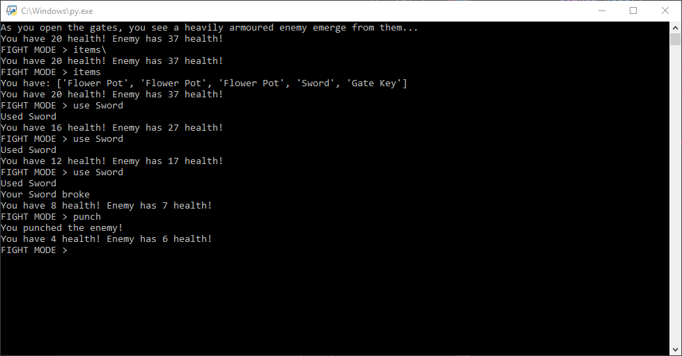
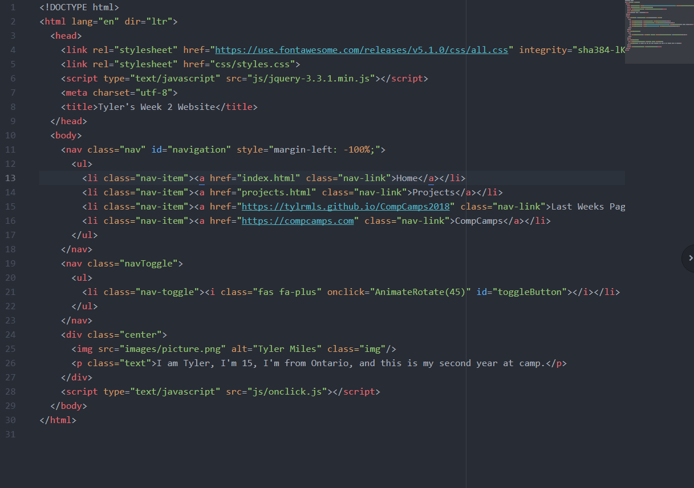

My python game wasn't originally going to be my main project, but i spent more time on it than i first planned to, and so that kinda became my main project along with this website.
My website was supposed to be my main project, but I put about as much time into this website as i did with my python game, so they both became my main projects
